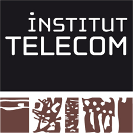

Paristechinois
一. 课程
课程介绍
（笔者来自 télécom paristech）一学年分为两个学期（semester），每个学期再分为两个period。过来的第一个period是Cycle d’Harmonisation，相当于过渡期，学一些跟大学里差不多的课程，还有一些通识课程。具体如下：
Cycle d'Harmonisation
S1P1 11/12
COM200
Physique des systèmes de télécommunications ()
S1P1 11/12
COM201
Communications numériques et théorie de l'Information ()
S1P1 11/12
COM202
Systèmes de télécommunications ()
S1P1 11/12
INF203
Bases de l'informatique ()
S1P1 11/12
MDI200
Probabilités ()
S1P1 11/12
RES200
Réseaux ()
S1P1 11/12
SES200
Introduction à l'économie et à la stratégie ()
S表示semestre ，P表示période。
现在是S1P2，已经把第一学年的课程选完了。笔者选的是3D图像人机接口的方向。
下面是专业课：
UE d'Enseignement Scientifiques et Techniques
S1P2 11/12
AMPHI
Amphi d'information ()
S1P2 11/12
INF224
Paradigmes de programmation (A1)
S1P2 11/12
SI221
Bases de la reconnaissance des formes (A2)
S1P2 11/12
SI344
Vision artificielle et raisonnement dans les images (B)
S2P3 11/12
INF222
Modèles et vérification (B2)
S2P3 11/12
INFSI350
Informatique graphique 3D et réalité virtuelle (A)
S2P3 11/12
MDI222
Statistiques (B1)
S2P4 11/12
SI381
Projet de traitement des images (A)
语言课：
（进来要分级考试，法语和英语都要）
Langues
S1 11/12
ANG-ORAL
Test oral anglais ()
S1 11/12
ANG003
ANG-Compréhension auditive A2..B2 ()
S1 11/12
ANG203
ANG-Pré-intermédiaire B (NOT C)
S1 11/12
FLE003
FLE-Pré-intermédiaire A ()
S1 11/12
FLE018
FLE- Cours- Entretiens C ()
S1+S2 11/12
FLE022
FLE-Phonétique C ()
S1 11/12
FLE026
FLE-Atelier soutien FLE pour les élèves chinois A ()
S1+S2 11/12
TOEFL EXT
TOEFL Extérieur ()
S2 11/12
ANG203
ANG-Pré-intermédiaire B (NOT C)
S2 11/12
FLE003
FLE-Pré-intermédiaire A ()
FLE——Français langue étrangère (French as a foreign language)；ANG——Anglais (English).
法律课：
Droit
S1P2 11/12
DROIT203
Introduction générale au Droit (pour les étudiants inscrits en FLE) ()
S2P3 11/12
DROIT201
Droit des technologies de l'information et de la communication ()
人文课：
Formation humaine
S1P1 11/12
FH202
Atelier d'écriture créative pour non francophones ()
S1+S2 11/12
FH230
Club Theatre Français ()
S1P2 11/12
FH207
Communication pour non francophones ()
S1P2 11/12
FH239
Coopération créative (théatre d'entreprise) ()
S2P3 11/12
FH202
Atelier d'écriture créative pour non francophones ()
Culture générale
S1 11/12
CG216
Projet-TANDEM "Langues et Cultures du Monde" ()
S1P2 11/12
CG206
La philosophie des sciences aujourd'hui ()
第二年应该会选择实习。
如何选专业
Telecom的专业选择很多，首先分领域：
Domaines
Communications（通信）
Electronique（电子）
Informatique（信息）
Mathématiques de l'ingénieur（工程数学）
Physique（物理）
Réseaux（网络）
Sciences économiques et sociales（经济和社会科学）
Signal-image（信号-图像）
各专业名称及所属领域，负责人：
Intitulé
Domaines
Correspondants
Apprentissage, fouille de données et applications
MDI, INF
Laurence LIKFORMAN-SULEM
Antennes, micro-ondes & radiofréquences
COM
Xavier BEGAUD
Applications et systèmes temps réel répartis embarqués
INF
Laurent PAUTET
Convergence fixe mobile dans l'accès et routage transparent
RES, COM
Maurice GAGNAIRE
RES, COM
Anne-Claire LEPAGE
COM
Jean-Claude BELFIORE
Philippe CIBLAT
Cryptographie et théories de l'information
MDI, INF
Gérard COHEN
Hugues RANDRIAMBOLOLONA
ELEC, COM
Patrick LOUMEAU
Intelligence, complexité et cognition
INF
Jean-Louis DESSALLES
INF
Sylvie VIGNES
SES, MDI
Laurent DECREUSEFOND
Suleyman USTUNEL
SES
Annie GENTES
Interfaces homme-machine, Web et informatique graphique 3D
TSI, INF
Tamy BOUBEKEUR
Eric LECOLINET
TSI
Isabelle BLOCH
Florence TUPIN
TSI, MDI
Isabelle ZAQUINE
INF
Talel ABDESSALEM
Pierre SENELLART
Nouvelles technologies de l'IP, réseaux multiservices
RES
Jean-Louis ROUGIER
SES
Nicolas AURAY
Olivier FOURNOUT
COM
Didier ERASME
Yves MATHIEU
Réseaux cellulaires et mobilité
RES
Philippe GODLEWSKI
Philippe MARTINS
Systèmes et applications multimédia, vidéo et audio
TSI
Bertrand DAVID
Beatrice PESQUET-POPESCU
Sécurité des systèmes embarqués
INF, ELEC
Guillaume DUC
Sécurité des systèmes d'information et des réseaux
RES, INF
Jean LENEUTRE
Ahmed SERHROUCHNI
RES, INF
Isabelle DEMEURE
TSI
Gérard BLANCHET
Bertrand DAVID
Gaël RICHARD
Stratégies, marchés et acteurs
SES
David BOUNIE
COM
Eric BERGEAULT
Georges RODRIGUEZ-GUISANTES
Architecture des systèmes embarqués
ELEC, TSI, INF
Alexis POLTI
Samuel TARDIEU
SES, INF
Bernard BURTSCHY
Thomas HOUY
ELEC
Tarik GRABA
Yves MATHIEU
Alexis POLTI
Théorie et paradigmes de l'informatique
INF
Samuel TARDIEU
很多选择哦~不过从学长学姐的经验来看，选择réseaux和 informatique 方向的今后比较容易找实习。因此中国学生大部分选的是这两个方向。如果想从事研究（比如phd）的话，可以选image，不过对数学和编程要求比较高。
学校关于专业的选择每年多少都会有一些变化。目前的情况是：每个人可以选择两个parcours找不到合适的中文翻译parcours，在Telecom近似约等于专业），至少valider一个parcours。每个parcours都有对应的必修课，有些parcours的必修课很接近，因此，可以组合选择这样的两个parcours。比如 system d’information（管理类）和Genie du logiciel（计算机类），或者Interfaces homme-machine, Web et informatique graphique 3D（计算机信号类）和image（图像类）。
选择一个parcours之后，在上课的过程中发现不适合或者不喜欢可以申请更换parcours，现在有说法是提前6周申请。
• 如何选课（选什么课程对以后的专业发展比较有用）
哪些课可选哪些课必选？
Telecom：两年分为个学期，
必修课的选择参见上面的课程介绍。基本情况是学分分为：必修84个学分。由两个学期的课程组成 + 3个雅典周的课程。两个学期的课程中只指专业课。
每个学期的课程根据上课的时间分为A1，A2，A，B1，B2，B七种类型，A=A1+A2，B=B1+B2。A1，A2， B1，B2是小课，每门课3个学分，持续时间为半个学期，A，B是大课，每门课6个学分。每一个雅典周是6个学分。
专业选课需要根据所选的parcour来定，这里谈到的是选择image为parcours的：
第一学年最好选一个parcour。因为这样你做projet的时候才不至于基本的概念都不清楚，而且找实习的时候也让人觉得你学到了些什么。另外，相似的课一起学，会比较容易些。你光上一两门图像的课会比较难，也不利于你做projet。建议选一门课，SI227, étude de cas en signal.讲得都是比较基本得信号图像的概念。而且这门科没有考试，课上写写matlab的入门程序，如果学图像的话，最好学一下这个。因为课上老师手把手教matlab，否则的话，学图像的课，写代码会比较痛苦。还有，最好在实习之前把SI343学一下。另外，MDI222可能相对比较难
PS：选课是一个很灵活的过程，在课程正式开始之前都是有机会申请更换的。
•上课形式（比如一节课多久啊，一般几次课后考试啊，考试形式开闭卷啊之类的）
一节课的持续时间是：90分钟
在正式学期开始之后是一门课的时间为20*90min，如果有考试的话，时间是最后一次课。
考试大部分为开卷，大部分都不仅仅是选择填空，还有好些问答题。事实证明，考试时间是很紧张的，原因很简单。首先看懂题目就要花去很多时间，然后即使理解了题目，有思路解题，还需要大量时间转换成法语表达出来。
•一些跟学校生活相关的网站？（比如查课表啊，学校给的邮箱啊，下课件啊等等）
教务网站：https://eole.telecom-paristech.fr
•其他（比如学校的wifi怎么用，如何打印文件，想办什么事要去什么办公室找什么老师之类的）
这里只是讲到Telecom的情况，Eurocom情况暂不详。
wifi的使用：
wifi使用范围：教学楼大部分区域；
wifi 热点:Telecom-Paristech（需要帐号与密码，帐号为学生邮箱地址，密码为学生证初始密码）
Invite-Telecom-Paristech（不需要帐号密码）
打印文件：
地点：图书馆，C楼机房；
方式：开学之后每个同学会领到一张打印卡，打印卡里面包含有2000页A4打印和200页复印；超出额度后会一定收取费用，比外面还是便宜很多。
食堂：
Telecom：
地点：学校有自己的食堂，由于教学楼比较复杂，一开始的时候不是很容易找到。
时间：11：30-14：00，周一到周五；晚饭时间不详，不是每天晚上都有，而且传说晚饭菜不好，一般自己解决。
价格：学生有补贴，补贴之后的价格情况是：一顿标准餐：1（salad）+7（plate）+1（dessert）=9 points = 3.12 euro
Eurocom：学校没有自己的食堂，可以移步到附近学校吃饭，或者自己准备；花销一般也是3-4 euro；
•宿舍的活动（所住的宿舍楼是否有些活动⋯⋯）
在学校范围内没有组织什么宿舍的活动，不过倒是中国人自己经常一起玩。而且多半是每一届自己玩，主要是因为Telecom中国学生挺多的，一届的学生也应经挺多了。而且这一届也是同一个项目的学生一起玩。我们通过巴黎高科过来的学生就很少和过来读master的人一起玩。一般情况下，Telecom的宿舍相对比较大，所以很多时候都在Telecom选择聚会，
可能每周都有中国人自己的聚会。当然聚会主要是吃饭，然后就开始聊天。虽然很多时候我们不能理解为什么法国人就喜欢soirée上喝酒聊天，可能他们也不能理解我们吃饭聊天吧。不过中国人自娱自乐倒是挺high的。
•社团介绍（体育的，文艺的，跟企业联系的等等⋯⋯）
学校里倒有许多社团，而且经常会有很多活动。活动比较多的就是BDE还有一个校友会。BDE每个星期都会组织一些活动，还有校友会经常有活动。那个体育的有个协会，不过好像中国人参加活动并不积极。和企业的联系还好，经常会有很多企业来学校进行宣传和演讲。
可能是我们太宅了吧，很少去参加他们的一些活动。不过BDE组织的旅游还是很多中国人去参加的，毕竟比较便宜，虽然没有Mines那么便宜。学校里面还有什么戏剧社团，不过大部分中国人语言能力不够，所有只有很少的人去参加。
•soirée（谈谈你们学校soirée的频繁程度啊，在soirée都干些什么）
学校里面每周都要2次soirée，一般是周二和周五，偶尔周六会有。在soirée里面主要是喝酒喝聊天吧，其实中国人去得不多，一般都宅了。而且每次去都内容都差不多，虽然偶尔会有什么主题。但是始终逃不出喝酒聊天的东西。
•学校传统活动（parrainage等等⋯⋯）
传统活动？Telecom好像没有。
二. 找实习（最好分专业写，找实习的途径，能找到什么样的实习⋯⋯）
找实习Telecom有Forum的，准备好简历，到时候去就可以了。很多人都去了运营商实习，专业区分好像不太明显。或者去了技术公司吧。这个难以统计。
三. 个人的感受（跟法国人的融合程度，对学校的总体评价，以及在这所学校生活学习的一些心得体会，自由发挥啦⋯⋯）
跟法国学生好像几乎没什么交流，最多也就和老师有点交流吧。开学的时候所有外国学生一起补课，出了中国人主要就是巴西人。那个时候偶尔还和他们说说话，到后来都懒得和他们说话了。后来和法国人一起上课，他们又自己的圈子，中国人一般不能融入，所以也就是自己玩了。
学校还好，有好有坏吧。上课法语授课经常处于漫游状态，遇到个说话清楚的老师还能听懂一部分；遇到个说话比较快的老师就不知道他在讲什么了。在这里，一定要有好的心理状态，听不懂看不懂要要淡定，没啥害怕的。
Télécom 生活

2012年5月13日星期日